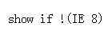

BT8004: 只有 IE 支持条件注释
标准参考
无。
问题描述
条件注释是 IE5.0 以上版本所特有的一种对注释的扩展，其它浏览器不支持。
造成的影响
对于<!--[if expression]> HTML <![endif]-->，非 IE 浏览器会当作注释内容，不显示；对于 <![if expression]> HTML <![endif]>，非 IE 浏览器浏览器会当作普通代码段显示。
受影响的浏览器
| IE6 IE7 IE8 |
|---|
问题分析
条件注释是 IE5.0 以上版本所特有的一种对注释的扩展。
条件注释有以下两种方式：
<!--[if expression]> HTML <![endif]-->
<![if expression]> HTML <![endif]>
expression 可用的常见值如下：
- IE
- IE5 以上的版本
- IE version
- 版本号为 version 的 IE
- lt IE version
- 版本号小于 version 的 IE
- lte IE version
- 版本号小于等于 version 的 IE
- gt IE version
- 版本号大于 version 的 IE
- gte IE version
- 版本号大于等于 version 的 IE
另外，expression 还可以是以上值的逻辑组合。
分析以下代码：
<!--[if IE 8]>
<p>show if IE 8</p>
<![endif]-->
<!--[if !(IE 8)]>
<p>show if !(IE 8)</p>
<![endif]-->
<![if IE 8]>
<p> show if IE 8</p>
<![endif]>
<![if IE 6]>
<p> show if IE 6</p>
<![endif]>
上面代码利用了 IE 特有的条件注释，所以在 IE 中会针对条件表达式的判断，在相应的版本中显示代码段。此问题与文档模式无关。
这段代码在不同的浏览器环境中表现如下：
| IE6 | IE7 | IE8 | 非IE浏览器 |
|---|---|---|---|
 |
 |  |
 |
可见：在 IE 浏览器中，在不同的版本下，按照条件显示了条件注释中包含的代码。
但是在非 IE 浏览器中不支持条件注释，所以，对于 <!--[if expression]> HTML <![endif]--> 形式的条件注释，其中的代码被当作普通的注释内容，没有显示；而对于 <![if expression]> HTML <![endif]> 形式的条件注释，其中的代码会当作普通代码段显示出来。
关于 IE 条件注释的详细资料，请参照 MSDN 的 About Conditional Comments。
解决方案
在没有特殊需求的情况下，尽量避免使用 IE 特有的条件注释。
参见
知识库
相关问题
测试环境
| 操作系统版本: | Windows 7 Ultimate build 7600 |
|---|---|
| 浏览器版本: |
IE6 IE7 IE8 Firefox 3.6 Chrome 4.0.302.3 dev Safari 4.0.4 Opera 10.51 |
| 测试页面: | IE_comment.html |
| 本文更新时间: | 2010-07-12 |
关键字
IE Conditional Comments 条件注释